Modeling & Assessing Metabolic Syndrome In Rats (Metabolite Added Value)
1 Metabolic Syndrome Metabolites
Analysis’ focus is to examine the effects of nutritional models (i.e. plans) either directly on clinical measurements that might be associated with the metabolic syndrome or indirectly on metabolites that could have a potential association with the metabolic syndrome.
2 Using Surrogates To Clinical Endpoints
To identify primary metabolites that characterize aspects of the metabolic syndrome (as recorded in the clinical data), the following surrogate based procedure is used:
- From the metabolite data, observations from only the last recorded time point 4 (i.e. month 3 post-mortem) are extracted.
- For each clinical endpoint (as recorded in the clinical data) likelihood ratio testing (LRT) is used against all metabolites of the last recorded time point 4 only. Metabolites are assumed to have a non-linear association with the clinical endpoint.
- For each clinical endpoint (as recorded in the clinical data), the
4 or at least 1 (if 4 are not present)most significant metabolites in terms of the LRT’sChi Squaredvalue, metabolite pooled p-value, as well as the FDR adjusted p-value, are obtained and stored for later use. The pooled and FDR-adjusted p-value thresholds used are10%and100%respectively. All other metabolites are discarded.
Results for the metabolites that survive the above thresholds are shown in the table below.
Continuing the above procedure with step 4:
For each clinical endpoint (column
clinicalVar) that has been selected from step3, the metabolite (columnmetaboliteVar) with thelargest significance(i.e. association) is used as asurrogatevariable. In the above table, metabolites are sorted in descending significance for each clinical endpoint. If there are more than one metabolites per clinical endpoint, then the other, less significant, metabolites are used as covariate adjustments at time point 0 as mentioned in step5below.For each clinical endpoint (column
clinicalVar) that has been selected from step3, the correspondingsurrogatemetabolite as per step4is used as the response variable in a longitudinal model in order to test the effects of the nutritional model upon it. In essence, the effects of the nutritional model are examined through time and on the surrogate metabolite instead of the actual but non-longitudinal clinical endpoint. The longitudinal model is not only adjusted for the surrogate’s measurement at time point 0, thus accounting for any potential age differences, but also for the presence of any other less significantly associated metabolite measurements at time point 0.For each longitudinal model, the probabilities of nutrition model difference on the surrogate metabolite being larger than
0are extracted, and the ones exceeding70%are kept for further examination.
The table below shows the results from step 6:
| comparison | Pr(diff>0) | clinicalVar | surrogate | adjustedToTime0 |
|---|---|---|---|---|
| HC_C | 0.9490 | Atherogenic_Index | 3_Methylhistidine | 3_Methylhistidine0-Lactic_Acid0 |
| HC_C | 0.7235 | LDL | Uracil | Uracil0-Cytidine0-Pyruvic0 |
| HC_C | 1.0000 | Tchol | Choline | Choline0 |
| HFHC_C | 0.9985 | Atherogenic_Index | 3_Methylhistidine | 3_Methylhistidine0-Lactic_Acid0 |
| HFHC_C | 0.8858 | BUN | Creatinine | Creatinine0-Dimethylamine0-Allantoin0 |
| HFHC_C | 0.8835 | Creatinine | Creatinine | Creatinine0-Allantoin0-Dimethylamine0 |
| HFHC_C | 0.8795 | Mg | Creatinine | Creatinine0-Allantoin0-Dimethylamine0 |
| HFHC_C | 0.7832 | Tchol | Choline | Choline0 |
3_Methylhistidine - Surrogate Of Atherogenic_Index
Atherogenic_Index is the log of TGL to HDL ratio.
### Summary of continuous variables ###
NutrMod: Overall
n miss p.miss mean sd median p25 p75 min max skew kurt
3_Methylhistidine0 34 0 0 7000 5924 6540 1890 10874 172 23045 0.8 -0.0026
Lactic_Acid0 34 0 0 2488 827 2211 1930 2942 1275 4483 1.1 0.4150
------------------------------------------------------------------------------------------
NutrMod: C
n miss p.miss mean sd median p25 p75 min max skew kurt
3_Methylhistidine0 8 0 0 9745 7363 9071 6285 11971 616 23045 0.61 0.33
Lactic_Acid0 8 0 0 2091 350 2048 1908 2250 1540 2729 0.42 1.12
------------------------------------------------------------------------------------------
NutrMod: HC
n miss p.miss mean sd median p25 p75 min max skew kurt
3_Methylhistidine0 13 0 0 7316 3975 6823 3191 10989 2500 13880 0.22 -1.42
Lactic_Acid0 13 0 0 2967 849 2890 2452 3350 1985 4483 0.68 -0.72
------------------------------------------------------------------------------------------
NutrMod: HFHC
n miss p.miss mean sd median p25 p75 min max skew kurt
3_Methylhistidine0 13 0 0 4994 6293 1686 910 6677 172 17117 1.3 -0.042
Lactic_Acid0 13 0 0 2253 821 1959 1857 2450 1275 4232 1.4 1.631
p-values
pNormal pNonNormal
3_Methylhistidine0 0.20096843 0.1051848
Lactic_Acid0 0.02130556 0.0125301
Standardize mean differences
average 1 vs 2 1 vs 3 2 vs 3
3_Methylhistidine0 0.5151679 0.410518 0.6937425 0.4412432
Lactic_Acid0 0.8198847 1.348614 0.2560398 0.8550005| Overall | C | HC | HFHC | p | test | SMD | |
|---|---|---|---|---|---|---|---|
| n | 34 | 8 | 13 | 13 | |||
| 3_Methylhistidine0 (mean (SD)) | 6,999.96 (5,924.42) | 9,745.33 (7,362.69) | 7,316.45 (3,975.35) | 4,994.01 (6,293.14) | 0.201 | 0.515 | |
| Lactic_Acid0 (median [IQR]) | 2,210.92 [1,930.23, 2,941.61] | 2,048.40 [1,908.06, 2,250.37] | 2,890.13 [2,452.19, 3,350.35] | 1,959.41 [1,857.08, 2,449.71] | 0.013 | nonnorm | 0.820 |
3_Methylhistidine at Month 0 : Baseline
3_Methylhistidine at Months 1-3 : Treatment
3_Methylhistidine. HC vs C difference
3_Methylhistidine. HFHC vs C difference
3_Methylhistidine. HFHC vs HC difference
3_Methylhistidine nutritional model differences from baseline at t0 (trends)
3_Methylhistidine nutritional model differences based on raw data. Dashed horizontal line corresponds to the adjustment value of 3_Methylhistidine at time 0.
3_Methylhistidine nutritional model differences from baseline at t0 (split view). Points denote median concentrations and lines denote the corresponding central 80% likelihood intervals.
3_Methylhistidine nutritional model differences versus 3_Methylhistidine at time 0 (trends) using raw data.
3_Methylhistidine nutritional model differences versus 3_Methylhistidine at time 0 (trends) using model adjustment.
(a), the differences of the nutritional models depend on the baseline value. With adjustment, graph (b), the differences of the nutritional models do not depend on the baseline value i.e. trend lines are parallel to each other.
Uracil - Surrogate Of LDL
### Summary of continuous variables ###
NutrMod: Overall
n miss p.miss mean sd median p25 p75 min max skew kurt
Uracil0 34 0 0 7580 3357 7150 5268 9009 3924 22035 2.48 9.62
Cytidine0 34 0 0 73832 29671 67774 55517 77210 20877 150231 0.88 0.52
Pyruvic0 34 0 0 2104 813 2121 1486 2603 1 3870 -0.30 0.23
------------------------------------------------------------------------------------------
NutrMod: C
n miss p.miss mean sd median p25 p75 min max skew kurt
Uracil0 8 0 0 5862 1505 5609 4540 7218 4279 8001 0.259 -2.00
Cytidine0 8 0 0 51297 19742 53805 42272 64773 20877 76669 -0.551 -0.77
Pyruvic0 8 0 0 1991 686 2016 1553 2485 1023 3038 -0.045 -0.81
------------------------------------------------------------------------------------------
NutrMod: HC
n miss p.miss mean sd median p25 p75 min max skew kurt
Uracil0 13 0 0 9615 4061 8722 7427 10209 5481 22035 2.65 8.3
Cytidine0 13 0 0 89183 34232 75154 63706 116552 47478 150231 0.52 -1.2
Pyruvic0 13 0 0 2385 947 2397 1957 2983 1 3870 -1.09 2.6
------------------------------------------------------------------------------------------
NutrMod: HFHC
n miss p.miss mean sd median p25 p75 min max skew kurt
Uracil0 13 0 0 6603 2385 5937 4891 7726 3924 10951 0.933 -0.34
Cytidine0 13 0 0 72349 20629 67989 59255 73794 50170 116095 1.439 1.45
Pyruvic0 13 0 0 1893 711 2024 1319 2345 760 3060 0.074 -1.21
p-values
pNormal pNonNormal
Uracil0 0.01372648 0.00610947
Cytidine0 0.01249632 0.03328709
Pyruvic0 0.28322844 0.21145029
Standardize mean differences
average 1 vs 2 1 vs 3 2 vs 3
Uracil0 0.8340753 1.2257422 0.3719465 0.9045372
Cytidine0 0.9980696 1.3558563 1.0426930 0.5956596
Pyruvic0 0.4014112 0.4758613 0.1408114 0.5875611| Overall | C | HC | HFHC | p | test | SMD | |
|---|---|---|---|---|---|---|---|
| n | 34 | 8 | 13 | 13 | |||
| Uracil0 (median [IQR]) | 7,150.09 [5,268.09, 9,009.22] | 5,608.51 [4,540.04, 7,217.58] | 8,721.63 [7,426.84, 10,208.85] | 5,937.38 [4,891.26, 7,725.84] | 0.006 | nonnorm | 0.834 |
| Cytidine0 (mean (SD)) | 73,831.80 (29,670.75) | 51,296.59 (19,741.57) | 89,182.76 (34,232.29) | 72,348.66 (20,628.86) | 0.012 | 0.998 | |
| Pyruvic0 (mean (SD)) | 2,103.88 (813.28) | 1,991.04 (686.47) | 2,384.56 (946.83) | 1,892.65 (710.91) | 0.283 | 0.401 |
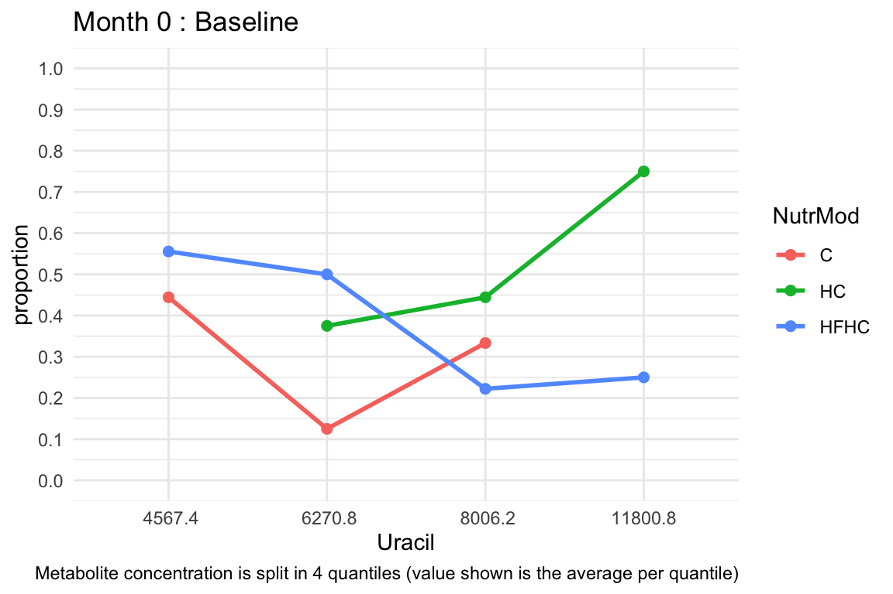
Uracil at Month 0 : Baseline
Uracil at Months 1-3 : Treatment

Uracil. HC vs C difference
Uracil. HFHC vs C difference
Uracil. HFHC vs HC difference
Uracil nutritional model differences from baseline at t0 (trends)
Uracil nutritional model differences based on raw data. Dashed horizontal line corresponds to the adjustment value of Uracil at time 0.
Uracil nutritional model differences from baseline at t0 (split view). Points denote median concentrations and lines denote the corresponding central 80% likelihood intervals.
Uracil nutritional model differences versus Uracil at time 0 (trends) using raw data.
Uracil nutritional model differences versus Uracil at time 0 (trends) using model adjustment.
(a), the differences of the nutritional models depend on the baseline value. With adjustment, graph (b), the differences of the nutritional models do not depend on the baseline value i.e. trend lines are parallel to each other.
Choline - Surrogate Of Tchol
Choline at Month 0 : Baseline
Choline at Months 1-3 : Treatment
Choline. HC vs C difference
Choline. HFHC vs C difference
Choline. HFHC vs HC difference
Choline nutritional model differences from baseline at t0 (trends)
Choline nutritional model differences based on raw data. Dashed horizontal line corresponds to the adjustment value of Choline at time 0.

Choline nutritional model differences from baseline at t0 (split view). Points denote median concentrations and lines denote the corresponding central 80% likelihood intervals.
Choline nutritional model differences versus Choline at time 0 (trends) using raw data.
Choline nutritional model differences versus Choline at time 0 (trends) using model adjustment.
(a), the differences of the nutritional models depend on the baseline value. With adjustment, graph (b), the differences of the nutritional models do not depend on the baseline value i.e. trend lines are parallel to each other.
Creatinine - Surrogate Of BUN/Creatinine/Mg

Creatinine at Month 0 : Baseline

Creatinine at Months 1-3 : Treatment

Creatinine. HC vs C difference

Creatinine. HFHC vs C difference
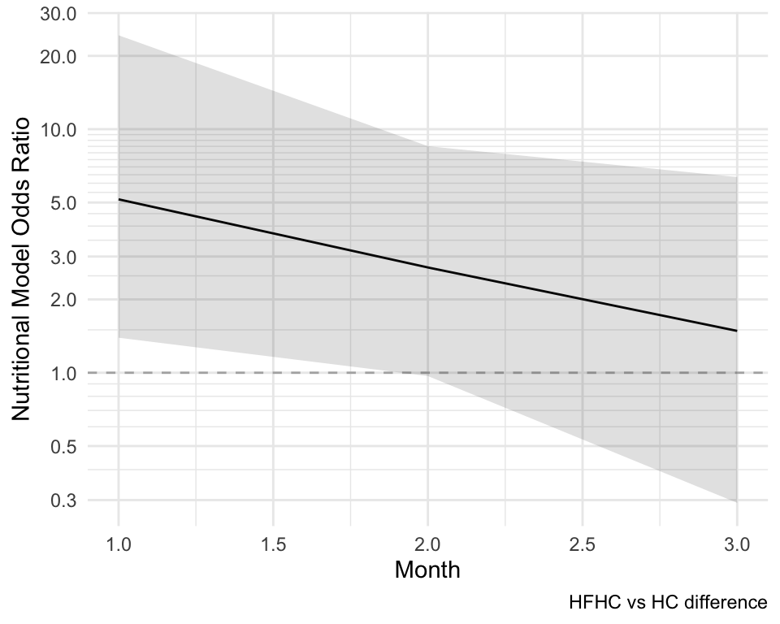
Creatinine. HFHC vs HC difference
Creatinine nutritional model differences from baseline at t0 (trends)

Creatinine nutritional model differences based on raw data. Dashed horizontal line corresponds to the adjustment value of Creatinine at time 0.

Creatinine nutritional model differences from baseline at t0 (split view). Points denote median concentrations and lines denote the corresponding central 80% likelihood intervals.

Creatinine nutritional model differences versus Creatinine at time 0 (trends) using raw data.

Creatinine nutritional model differences versus Creatinine at time 0 (trends) using model adjustment.
(a), the differences of the nutritional models depend on the baseline value. With adjustment, graph (b), the differences of the nutritional models do not depend on the baseline value i.e. trend lines are parallel to each other.
3 Using Other Non Surrogate Metabolites
Here, metabolites that have not been found to be associated with any of the clinical variables are tested for nutritional model differences via longitudinal models adjusting for the metabolite’s value at time point 0.
As in the previous analysis and its step 6, for each longitudinal model, the probabilities of nutrition model difference on the metabolite being larger than 0 are extracted, and the ones exceeding 70% are kept for further examination.
The table below shows the results:
| comparison | Pr(diff>0) | metaboliteVar | adjustedToTime0 |
|---|---|---|---|
| HC_C | 0.9192 | Methylamine | Methylamine0 |
| HC_C | 0.8040 | Monoisoamylamine | Monoisoamylamine0 |
| HC_C | 0.9308 | Sarcosine | Sarcosine0 |
| HC_C | 0.9588 | Alanine | Alanine0 |
| HC_C | 1.0000 | Proline | Proline0 |
| HC_C | 0.9872 | Taurine | Taurine0 |
| HC_C | 0.7185 | Aspartic_Acid | Aspartic_Acid0 |
| HC_C | 0.8068 | Methionine | Methionine0 |
| HC_C | 0.9708 | Tryptamine | Tryptamine0 |
| HC_C | 0.9670 | Phenylalanine | Phenylalanine0 |
| HC_C | 0.9240 | Fructose | Fructose0 |
| HC_C | 0.7098 | Theobromine | Theobromine0 |
| HC_C | 0.9842 | Mannitol | Mannitol0 |
| HC_C | 0.8260 | Arabitol | Arabitol0 |
| HC_C | 0.9275 | Ascorbic_Acid | Ascorbic_Acid0 |
| HC_C | 0.7680 | Glucose | Glucose0 |
| HC_C | 0.7228 | Sorbitol | Sorbitol0 |
| HFHC_C | 0.9415 | Monoisoamylamine | Monoisoamylamine0 |
| HFHC_C | 0.8958 | Sarcosine | Sarcosine0 |
| HFHC_C | 0.8792 | Alanine | Alanine0 |
| HFHC_C | 0.9650 | Proline | Proline0 |
| HFHC_C | 0.8812 | Taurine | Taurine0 |
| HFHC_C | 0.7602 | Thymine | Thymine0 |
| HFHC_C | 0.7272 | Aspartic_Acid | Aspartic_Acid0 |
| HFHC_C | 0.9658 | Adenine | Adenine0 |
| HFHC_C | 0.9067 | Methionine | Methionine0 |
| HFHC_C | 0.7478 | Tryptamine | Tryptamine0 |
| HFHC_C | 0.9992 | Fructose | Fructose0 |
| HFHC_C | 0.7525 | Mannitol | Mannitol0 |
| HFHC_C | 0.9585 | Caffeine | Caffeine0 |
| HFHC_C | 0.9542 | Indole_3_Lactic_Acid | Indole_3_Lactic_Acid0 |
| HFHC_C | 0.9780 | Adenosine | Adenosine0 |
| HFHC_C | 0.9168 | Ribose | Ribose0 |
| HFHC_C | 0.9638 | Ascorbic_Acid | Ascorbic_Acid0 |
| HFHC_C | 0.9980 | Glucose | Glucose0 |
| HFHC_C | 0.9750 | Mannose | Mannose0 |
These results lead to the development of 24 models based on the distinct metabolite cases of the above table, which are arranged below by decreasing average probability of nutrition model difference:
| ModelNumber | metaboliteVar | adjustedToTime0 | Pr(diff>0) |
|---|---|---|---|
| 1 | Proline | Proline0 | 0.9825 |
| 2 | Adenosine | Adenosine0 | 0.9780 |
| 3 | Mannose | Mannose0 | 0.9750 |
| 4 | Phenylalanine | Phenylalanine0 | 0.9670 |
| 5 | Adenine | Adenine0 | 0.9658 |
| 6 | Fructose | Fructose0 | 0.9616 |
| 7 | Caffeine | Caffeine0 | 0.9585 |
| 8 | Indole_3_Lactic_Acid | Indole_3_Lactic_Acid0 | 0.9542 |
| 9 | Ascorbic_Acid | Ascorbic_Acid0 | 0.9456 |
| 10 | Taurine | Taurine0 | 0.9342 |
| 11 | Methylamine | Methylamine0 | 0.9192 |
| 12 | Alanine | Alanine0 | 0.9190 |
| 13 | Ribose | Ribose0 | 0.9168 |
| 14 | Sarcosine | Sarcosine0 | 0.9132 |
| 15 | Glucose | Glucose0 | 0.8830 |
| 16 | Monoisoamylamine | Monoisoamylamine0 | 0.8728 |
| 17 | Mannitol | Mannitol0 | 0.8684 |
| 18 | Tryptamine | Tryptamine0 | 0.8593 |
| 19 | Methionine | Methionine0 | 0.8567 |
| 20 | Arabitol | Arabitol0 | 0.8260 |
| 21 | Thymine | Thymine0 | 0.7602 |
| 22 | Aspartic_Acid | Aspartic_Acid0 | 0.7229 |
| 23 | Sorbitol | Sorbitol0 | 0.7228 |
| 24 | Theobromine | Theobromine0 | 0.7098 |
Proline
Proline at Month 0 : Baseline
Proline at Months 1-3 : Treatment
Proline. HC vs C difference
Proline. HFHC vs C difference
Proline. HFHC vs HC difference
Proline nutritional model differences from baseline at t0 (trends)
Proline nutritional model differences from baseline at t0 (split view). Points denote median concentrations and lines denote the corresponding central 80% likelihood intervals.
Adenosine
Adenosine at Month 0 : Baseline
Adenosine at Months 1-3 : Treatment
Adenosine. HC vs C difference
Adenosine. HFHC vs C difference
Adenosine. HFHC vs HC difference
Adenosine nutritional model differences from baseline at t0 (trends)
Adenosine nutritional model differences from baseline at t0 (split view). Points denote median concentrations and lines denote the corresponding central 80% likelihood intervals.
Mannose
Mannose at Month 0 : Baseline
Mannose at Months 1-3 : Treatment
Mannose. HC vs C difference
Mannose. HFHC vs C difference
Mannose. HFHC vs HC difference
Mannose nutritional model differences from baseline at t0 (trends)
Mannose nutritional model differences from baseline at t0 (split view). Points denote median concentrations and lines denote the corresponding central 80% likelihood intervals.
Phenylalanine
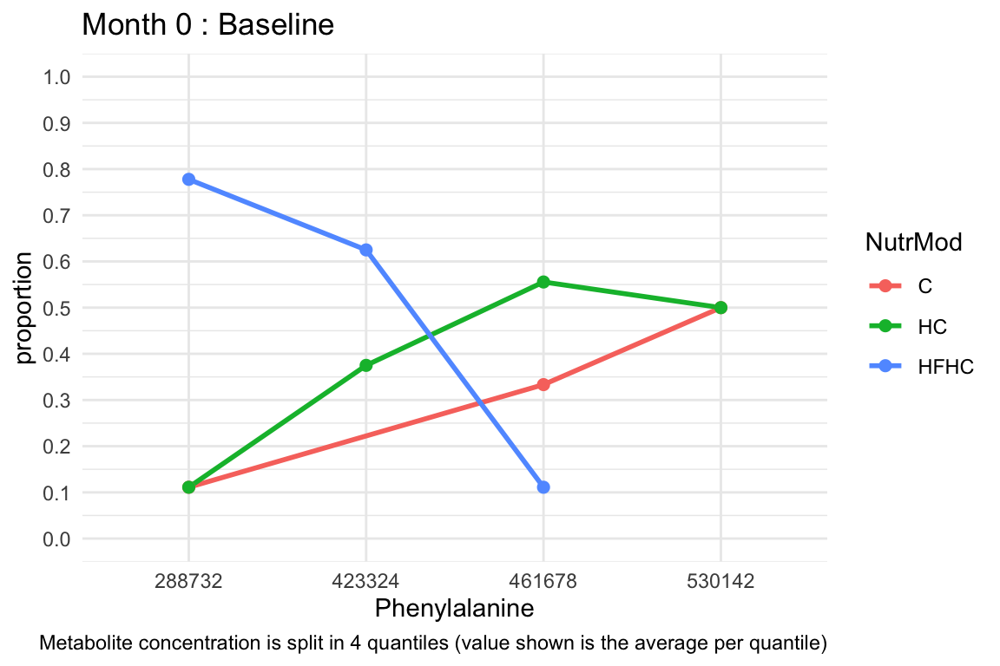
Phenylalanine at Month 0 : Baseline
Phenylalanine at Months 1-3 : Treatment
Phenylalanine. HC vs C difference
Phenylalanine. HFHC vs C difference
Phenylalanine. HFHC vs HC difference
Phenylalanine nutritional model differences from baseline at t0 (trends)
Phenylalanine nutritional model differences from baseline at t0 (split view). Points denote median concentrations and lines denote the corresponding central 80% likelihood intervals.
Adenine
Adenine at Month 0 : Baseline
Adenine at Months 1-3 : Treatment
Adenine. HC vs C difference
Adenine. HFHC vs C difference
Adenine. HFHC vs HC difference
Adenine nutritional model differences from baseline at t0 (trends)
Adenine nutritional model differences from baseline at t0 (split view). Points denote median concentrations and lines denote the corresponding central 80% likelihood intervals.
Fructose
Fructose at Month 0 : Baseline
Fructose at Months 1-3 : Treatment
Fructose. HC vs C difference
Fructose. HFHC vs C difference

Fructose. HFHC vs HC difference

Fructose nutritional model differences from baseline at t0 (trends)
Fructose nutritional model differences from baseline at t0 (split view). Points denote median concentrations and lines denote the corresponding central 80% likelihood intervals.
Caffeine
Caffeine at Month 0 : Baseline
Caffeine at Months 1-3 : Treatment
Caffeine. HC vs C difference
Caffeine. HFHC vs C difference
Caffeine. HFHC vs HC difference
Caffeine nutritional model differences from baseline at t0 (trends)
Caffeine nutritional model differences from baseline at t0 (split view). Points denote median concentrations and lines denote the corresponding central 80% likelihood intervals.
Indole_3_Lactic_Acid
Indole_3_Lactic_Acid at Month 0 : Baseline
Indole_3_Lactic_Acid at Months 1-3 : Treatment
Indole_3_Lactic_Acid. HC vs C difference
Indole_3_Lactic_Acid. HFHC vs C difference
Indole_3_Lactic_Acid. HFHC vs HC difference
Indole_3_Lactic_Acid nutritional model differences from baseline at t0 (trends)
Indole_3_Lactic_Acid nutritional model differences from baseline at t0 (split view). Points denote median concentrations and lines denote the corresponding central 80% likelihood intervals.
Ascorbic_Acid
Ascorbic_Acid at Month 0 : Baseline
Ascorbic_Acid at Months 1-3 : Treatment
Ascorbic_Acid. HC vs C difference
Ascorbic_Acid. HFHC vs C difference
Ascorbic_Acid. HFHC vs HC difference
Ascorbic_Acid nutritional model differences from baseline at t0 (trends)
Ascorbic_Acid nutritional model differences from baseline at t0 (split view). Points denote median concentrations and lines denote the corresponding central 80% likelihood intervals.
Taurine
Taurine at Month 0 : Baseline
Taurine at Months 1-3 : Treatment
Taurine. HC vs C difference
Taurine. HFHC vs C difference
Taurine. HFHC vs HC difference
Taurine nutritional model differences from baseline at t0 (trends)
Taurine nutritional model differences from baseline at t0 (split view). Points denote median concentrations and lines denote the corresponding central 80% likelihood intervals.
Methylamine
Methylamine at Month 0 : Baseline
Methylamine at Months 1-3 : Treatment
Methylamine. HC vs C difference
Methylamine. HFHC vs C difference
Methylamine. HFHC vs HC difference
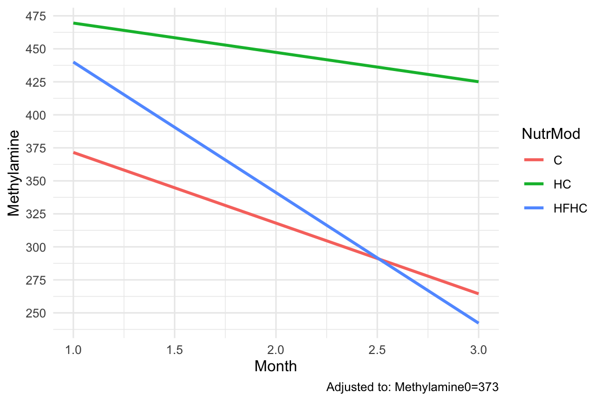
Methylamine nutritional model differences from baseline at t0 (trends)
Methylamine nutritional model differences from baseline at t0 (split view). Points denote median concentrations and lines denote the corresponding central 80% likelihood intervals.
Alanine
Alanine at Month 0 : Baseline
Alanine at Months 1-3 : Treatment
Alanine. HC vs C difference
Alanine. HFHC vs C difference
Alanine. HFHC vs HC difference
Alanine nutritional model differences from baseline at t0 (trends)
Alanine nutritional model differences from baseline at t0 (split view). Points denote median concentrations and lines denote the corresponding central 80% likelihood intervals.
Ribose
Ribose at Month 0 : Baseline
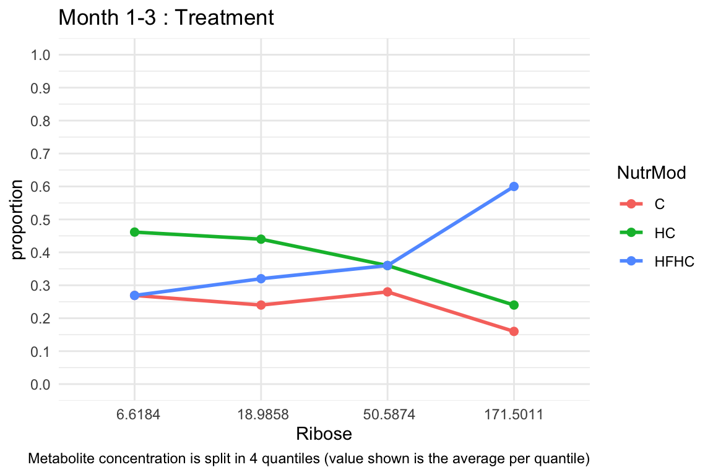
Ribose at Months 1-3 : Treatment
Ribose. HC vs C difference
Ribose. HFHC vs C difference
Ribose. HFHC vs HC difference
Ribose nutritional model differences from baseline at t0 (trends)
Ribose nutritional model differences from baseline at t0 (split view). Points denote median concentrations and lines denote the corresponding central 80% likelihood intervals.
Sarcosine
Sarcosine at Month 0 : Baseline
Sarcosine at Months 1-3 : Treatment
Sarcosine. HC vs C difference
Sarcosine. HFHC vs C difference
Sarcosine. HFHC vs HC difference
Sarcosine nutritional model differences from baseline at t0 (trends)

Sarcosine nutritional model differences from baseline at t0 (split view). Points denote median concentrations and lines denote the corresponding central 80% likelihood intervals.
Glucose
Glucose at Month 0 : Baseline
Glucose at Months 1-3 : Treatment
Glucose. HC vs C difference
Glucose. HFHC vs C difference
Glucose. HFHC vs HC difference
Glucose nutritional model differences from baseline at t0 (trends)
Glucose nutritional model differences from baseline at t0 (split view). Points denote median concentrations and lines denote the corresponding central 80% likelihood intervals.
Monoisoamylamine
Monoisoamylamine at Month 0 : Baseline
Monoisoamylamine at Months 1-3 : Treatment
Monoisoamylamine. HC vs C difference
Monoisoamylamine. HFHC vs C difference
Monoisoamylamine. HFHC vs HC difference
Monoisoamylamine nutritional model differences from baseline at t0 (trends)
Monoisoamylamine nutritional model differences from baseline at t0 (split view). Points denote median concentrations and lines denote the corresponding central 80% likelihood intervals.
Mannitol
Contains 11 non-detected cases i.e. 1s, out of 101 total cases post baseline.
Mannitol at Month 0 : Baseline
Mannitol at Months 1-3 : Treatment
Mannitol. HC vs C difference
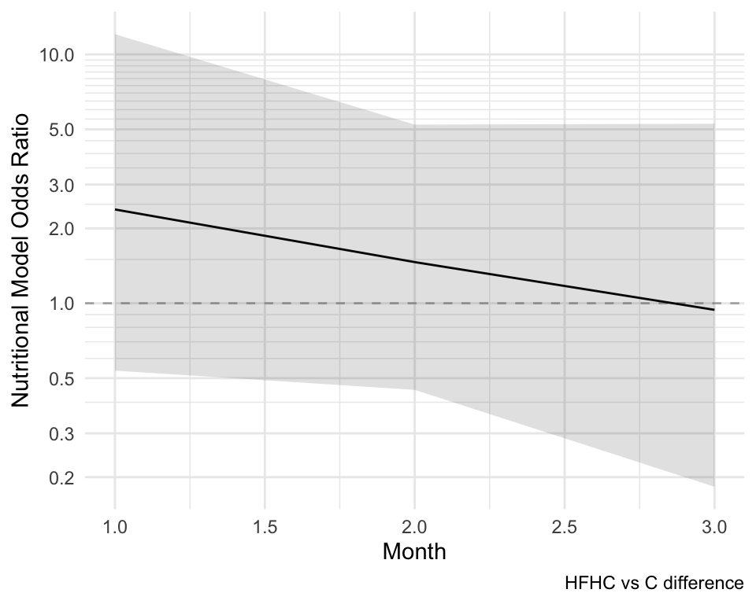
Mannitol. HFHC vs C difference
Mannitol. HFHC vs HC difference
Mannitol nutritional model differences from baseline at t0 (trends)
Mannitol nutritional model differences from baseline at t0 (split view). Points denote median concentrations and lines denote the corresponding central 80% likelihood intervals.
Tryptamine
Tryptamine at Month 0 : Baseline
Tryptamine at Months 1-3 : Treatment
Tryptamine. HC vs C difference
Tryptamine. HFHC vs C difference
Tryptamine. HFHC vs HC difference
Tryptamine nutritional model differences from baseline at t0 (trends)
Tryptamine nutritional model differences from baseline at t0 (split view). Points denote median concentrations and lines denote the corresponding central 80% likelihood intervals.
Methionine
Methionine at Month 0 : Baseline
Methionine at Months 1-3 : Treatment
Methionine. HC vs C difference
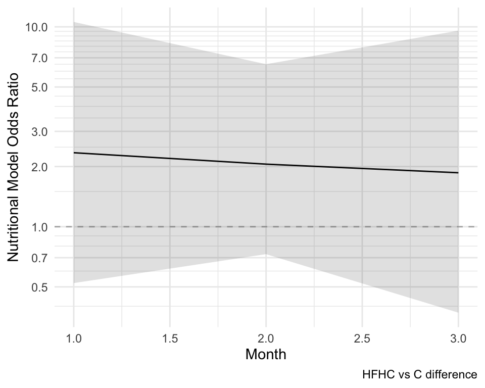
Methionine. HFHC vs C difference
Methionine. HFHC vs HC difference
Methionine nutritional model differences from baseline at t0 (trends)
Methionine nutritional model differences from baseline at t0 (split view). Points denote median concentrations and lines denote the corresponding central 80% likelihood intervals.
Arabitol
Contains 19 non-detected cases i.e. 1s, out of 101 total cases post baseline.
Arabitol at Month 0 : Baseline
Arabitol at Months 1-3 : Treatment
Arabitol. HC vs C difference
Arabitol. HFHC vs C difference
Arabitol. HFHC vs HC difference
Arabitol nutritional model differences from baseline at t0 (trends)
Arabitol nutritional model differences from baseline at t0 (split view). Points denote median concentrations and lines denote the corresponding central 80% likelihood intervals.
Thymine
Thymine at Month 0 : Baseline
Thymine at Months 1-3 : Treatment
Thymine. HC vs C difference
Thymine. HFHC vs C difference
Thymine. HFHC vs HC difference
Thymine nutritional model differences from baseline at t0 (trends)
Thymine nutritional model differences from baseline at t0 (split view). Points denote median concentrations and lines denote the corresponding central 80% likelihood intervals.
Aspartic_Acid
Aspartic_Acid at Month 0 : Baseline
Aspartic_Acid at Months 1-3 : Treatment
Aspartic_Acid. HC vs C difference
Aspartic_Acid. HFHC vs C difference
Aspartic_Acid. HFHC vs HC difference
Aspartic_Acid nutritional model differences from baseline at t0 (trends)
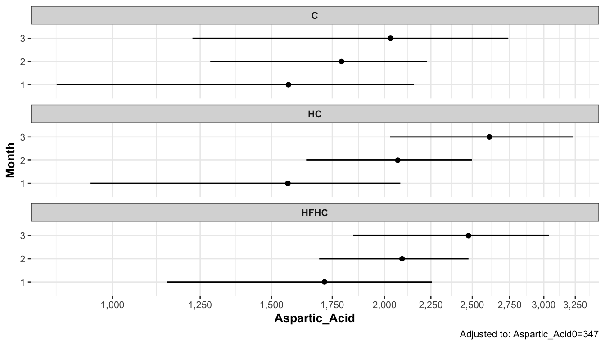
Aspartic_Acid nutritional model differences from baseline at t0 (split view). Points denote median concentrations and lines denote the corresponding central 80% likelihood intervals.
Sorbitol
Contains 39 non-detected cases i.e. 1s, out of 101 total cases post baseline.
Sorbitol at Month 0 : Baseline
Sorbitol at Months 1-3 : Treatment
Sorbitol. HC vs C difference
Sorbitol. HFHC vs C difference
Sorbitol. HFHC vs HC difference
Sorbitol nutritional model differences from baseline at t0 (trends)
Sorbitol nutritional model differences from baseline at t0 (split view). Points denote median concentrations and lines denote the corresponding central 80% likelihood intervals.
Theobromine
Contains 51 non-detected cases i.e. 1s, out of 101 total cases post baseline.
Theobromine at Month 0 : Baseline
Theobromine at Months 1-3 : Treatment
Theobromine. HC vs C difference
Theobromine. HFHC vs C difference
Theobromine. HFHC vs HC difference
Theobromine nutritional model differences from baseline at t0 (trends)

Theobromine nutritional model differences from baseline at t0 (split view). Points denote median concentrations and lines denote the corresponding central 80% likelihood intervals.
4 Multivariate Analysis
Exploratory types of analyses follow below, in search of other questions or hypothesis about metabolite rat blood concentrations and clinical variables i.e. not primarily focusing on the nutritional models’ effect as in the previous analysis.
Post-Mortem Data

1.

2.

3

1 and 2.

1 and 4.

2 and 4.
Longitudinal Data


Time Point (Month) separation emphasis.

Nutritional Model separation emphasis.


Per Time or Month - Unadjusted for Time 0
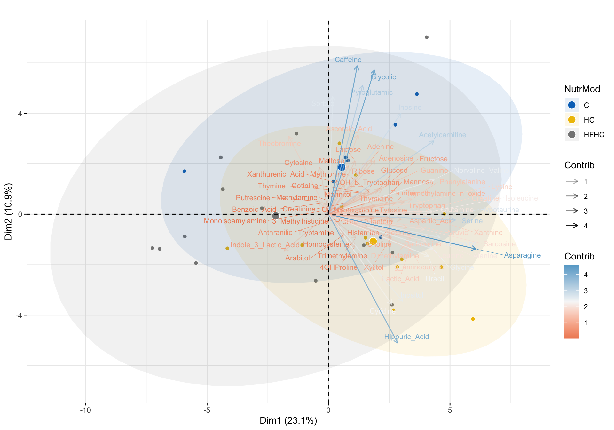
time 0.

time 1.
time 2.

time 3.
Per Time or Month - Adjusted for Time 0

time 0. Adjusted for the median value of each metabolite at time 0.
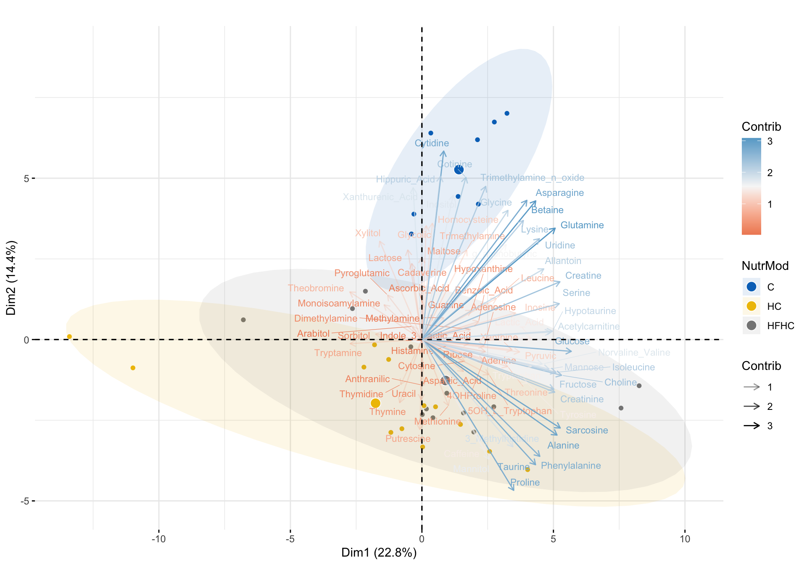
time 1. Adjusted for the median value of each metabolite at time 0.

time 2. Adjusted for the median value of each metabolite at time 0.
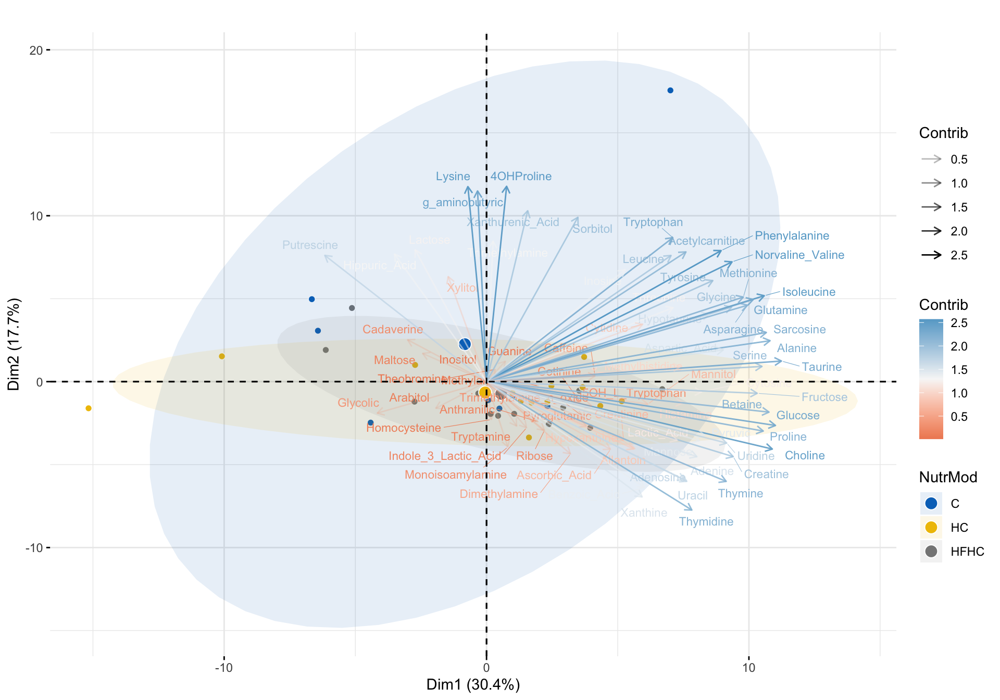
time 3. Adjusted for the median value of each metabolite at time 0.
5 Post Mortem Lipids
For each lipid, a model is built having the nutritional model as predictor and the metabolite concentration as response. Then, the larger than 0 probabilities of nutritional model differences on the metabolite are extracted, the corresponding Bonferroni adjusted p values are calculated, and the p values lower than 5% are kept for further examination. The tables below show the 96 in total significant differences split by nutritional model and involving 93 lipids.
In general, significant differences exist in 269 out of the 499 in total lipids, and the above description uses the strict Bonferroni criterion for selecting the smaller and most statistically significant set of lipids.
HC from C
HFHC from C
Selected cases are plotted below. P-values are not shown as they are very small for all of these cases i.e. have very high statistical significance.
Boxplots


PCA

Effects Estimation Plots
These plots focus on the actual concentration differences among the groups (instead of the p-values) and are thus more easily interpretable. The median value is used in order for the estimation to be more robust to any outliers. Simulation of 5000 bootstrap samples is conducted in order to obtain an estimate of the sampling distribution of the median difference among each group comparison, as well as to obtain a 95% confidence interval for the median difference.
Individual Effects Of Selected Lipids


Overall Effects Of Selected Lipids

HC from C above.

HFHC from C above.
95% confidence intervals are for the median (top plot) and the median difference (bottom plot) in each graph.
In the beginning of this Section 5 it was mentioned that statistically significant lipids were selected after applying the strict Bonferroni p-value correction. In the below version of Figure 186, this correction is not applied, such that a larger number of statistically significant lipids are considered using a Bayesian posterior probability of nutritional model difference of at least 80%.

HC from C involving significant lipids without the Bonferroni correction.

HFHC from C involving significant lipids without the Bonferroni correction.
95% confidence intervals are for the median (top plot) and the median difference (bottom plot) in each graph.
Overall Effects Of Selected Sub-Category Lipids
Here, the result from Figure 187 is used in order to view the effects of specific sub-category lipids on the difference trend between the nutritional models.
Control (C) To High Carbs (HC)


Control (C) To High Fat High Carbs (HFHC)


Clustered Image Maps
Control (C) To High Carbs (HC)

Controlsand High Carbs nutritional models. The vertical purple dotted line on the left cuts the lipid dendrogram into 4 clusters.


Controlsand High Carbs nutritional models.
Control (C) To High Fat High Carbs (HC)

Controlsand High Fat High Carbs nutritional models. The vertical purple dotted line on the left cuts the lipid dendrogram into 8 clusters.


Controlsand High Fat High Carbs nutritional models.
6 Urine Amino Acids - Longitudinal
A separate longitudinal model is built using each amino acid concentration as the response variable while adjusting for its initial baseline concentration. The interaction of the nutritional model (i.e. group) with time (i.e. month) is also considered in the model, and hence the model also adjusts for any time effect that might be present among the nutritional model groups. For each longitudinal model the probabilities of nutrition model difference on the amino acid concentration being larger than 0 are extracted, and the ones exceeding 80% are kept for further examination.
The table below shows the results:
| comparison | Pr(diff>0) | metaboliteVar | adjustedToTime0 |
|---|---|---|---|
| HC_C | 0.9988 | phenol_sulfate | phenol_sulfate0 |
| HC_C | 0.9805 | anthranilic_acid | anthranilic_acid0 |
| HC_C | 1.0000 | dopamine | dopamine0 |
| HC_C | 0.8348 | homovanilic_acid | homovanilic_acid0 |
| HC_C | 0.9992 | indole | indole0 |
| HC_C | 0.9960 | indole3lactic_acid | indole3lactic_acid0 |
| HC_C | 0.9938 | indoxyl_sulfate | indoxyl_sulfate0 |
| HC_C | 0.9512 | kynurenine | kynurenine0 |
| HC_C | 0.9348 | p_coumaric_acid_sulfate | p_coumaric_acid_sulfate0 |
| HC_C | 0.9910 | p_hba | p_hba0 |
| HC_C | 0.9762 | p_hyd_phenylpropionic_sulfate_1 | p_hyd_phenylpropionic_sulfate_10 |
| HC_C | 0.9990 | p_hydroxyphenyl_acetic_acid | p_hydroxyphenyl_acetic_acid0 |
| HC_C | 0.9948 | p_hydroxyphenyllactic_acid | p_hydroxyphenyllactic_acid0 |
| HC_C | 0.9922 | serotonin | serotonin0 |
| HC_C | 0.9988 | tyramine | tyramine0 |
| HC_C | 0.9965 | tyrosine | tyrosine0 |
| HFHC_C | 1.0000 | phenol_sulfate | phenol_sulfate0 |
| HFHC_C | 0.8535 | x5hiaa | x5hiaa0 |
| HFHC_C | 0.9965 | anthranilic_acid | anthranilic_acid0 |
| HFHC_C | 1.0000 | dopamine | dopamine0 |
| HFHC_C | 0.9245 | homovanilic_acid | homovanilic_acid0 |
| HFHC_C | 0.9432 | indole | indole0 |
| HFHC_C | 0.9653 | indole3acetic_acid | indole3acetic_acid0 |
| HFHC_C | 0.9790 | indoxyl_sulfate | indoxyl_sulfate0 |
| HFHC_C | 0.9995 | kynurenine | kynurenine0 |
| HFHC_C | 1.0000 | p_coumaric_acid_sulfate | p_coumaric_acid_sulfate0 |
| HFHC_C | 0.9688 | p_cresol_sulfate | p_cresol_sulfate0 |
| HFHC_C | 1.0000 | p_hba | p_hba0 |
| HFHC_C | 0.9462 | p_hba_sulfate | p_hba_sulfate0 |
| HFHC_C | 0.9335 | p_hyd_phenylacetic_sulfate | p_hyd_phenylacetic_sulfate0 |
| HFHC_C | 0.9782 | p_hyd_phenylpropionic_sulfate_1 | p_hyd_phenylpropionic_sulfate_10 |
| HFHC_C | 0.9998 | p_hydroxyphenyl_acetic_acid | p_hydroxyphenyl_acetic_acid0 |
| HFHC_C | 1.0000 | p_hydroxyphenyllactic_acid | p_hydroxyphenyllactic_acid0 |
| HFHC_C | 0.8920 | serotonin | serotonin0 |
| HFHC_C | 0.9990 | tyramine | tyramine0 |
| HFHC_C | 0.9990 | tyrosine | tyrosine0 |
These results lead to the development of 21 models based on the distinct metabolite cases of the above table, which are arranged below by decreasing average probability of nutrition model difference:
| ModelNumber | metaboliteVar | adjustedToTime0 | Pr(diff>0) |
|---|---|---|---|
| 1 | dopamine | dopamine0 | 1.0000 |
| 2 | p_hydroxyphenyl_acetic_acid | p_hydroxyphenyl_acetic_acid0 | 0.9994 |
| 3 | phenol_sulfate | phenol_sulfate0 | 0.9994 |
| 4 | tyramine | tyramine0 | 0.9989 |
| 5 | tyrosine | tyrosine0 | 0.9978 |
| 6 | p_hydroxyphenyllactic_acid | p_hydroxyphenyllactic_acid0 | 0.9974 |
| 7 | indole3lactic_acid | indole3lactic_acid0 | 0.9960 |
| 8 | p_hba | p_hba0 | 0.9955 |
| 9 | anthranilic_acid | anthranilic_acid0 | 0.9885 |
| 10 | indoxyl_sulfate | indoxyl_sulfate0 | 0.9864 |
| 11 | p_hyd_phenylpropionic_sulfate_1 | p_hyd_phenylpropionic_sulfate_10 | 0.9772 |
| 12 | kynurenine | kynurenine0 | 0.9754 |
| 13 | indole | indole0 | 0.9712 |
| 14 | p_cresol_sulfate | p_cresol_sulfate0 | 0.9688 |
| 15 | p_coumaric_acid_sulfate | p_coumaric_acid_sulfate0 | 0.9674 |
| 16 | indole3acetic_acid | indole3acetic_acid0 | 0.9653 |
| 17 | p_hba_sulfate | p_hba_sulfate0 | 0.9462 |
| 18 | serotonin | serotonin0 | 0.9421 |
| 19 | p_hyd_phenylacetic_sulfate | p_hyd_phenylacetic_sulfate0 | 0.9335 |
| 20 | homovanilic_acid | homovanilic_acid0 | 0.8796 |
| 21 | x5hiaa | x5hiaa0 | 0.8535 |
Below the top 10 amino acids from the above table are more closely examined.
Dopamine

Proline at Month 0 : Baseline

Proline at Months 1-3 : Treatment

dopamine. HC vs C difference

dopamine. HFHC vs C difference

dopamine. HFHC vs HC difference

dopamine nutritional model differences from baseline at t0 (trends)

dopamine nutritional model differences from baseline at t0 (split view). Points denote median concentrations and lines denote the corresponding central 80% likelihood intervals.
Changes Through Treatment Time


95% confidence intervals are for the median (top plot) and the median difference (bottom plot) in each graph.
Phenol Sulfate

Proline at Month 0 : Baseline

Proline at Months 1-3 : Treatment

phenol_sulfate. HC vs C difference

phenol_sulfate. HFHC vs C difference

phenol_sulfate. HFHC vs HC difference

phenol_sulfate nutritional model differences from baseline at t0 (trends)

phenol_sulfate nutritional model differences from baseline at t0 (split view). Points denote median concentrations and lines denote the corresponding central 80% likelihood intervals.
Changes Through Treatment Time


95% confidence intervals are for the median (top plot) and the median difference (bottom plot) in each graph.
P Hydroxyphenyl Acetic Acid

Proline at Month 0 : Baseline

Proline at Months 1-3 : Treatment

p_hydroxyphenyl_acetic_acid. HC vs C difference

p_hydroxyphenyl_acetic_acid. HFHC vs C difference

p_hydroxyphenyl_acetic_acid. HFHC vs HC difference

p_hydroxyphenyl_acetic_acid nutritional model differences from baseline at t0 (trends)

p_hydroxyphenyl_acetic_acid nutritional model differences from baseline at t0 (split view). Points denote median concentrations and lines denote the corresponding central 80% likelihood intervals.
Changes Through Treatment Time


95% confidence intervals are for the median (top plot) and the median difference (bottom plot) in each graph.
Tyramine

Proline at Month 0 : Baseline

Proline at Months 1-3 : Treatment

tyramine. HC vs C difference

tyramine. HFHC vs C difference

tyramine. HFHC vs HC difference

tyramine nutritional model differences from baseline at t0 (trends)

tyramine nutritional model differences from baseline at t0 (split view). Points denote median concentrations and lines denote the corresponding central 80% likelihood intervals.
Changes Through Treatment Time


95% confidence intervals are for the median (top plot) and the median difference (bottom plot) in each graph.
Tyrosine

Proline at Month 0 : Baseline

Proline at Months 1-3 : Treatment

tyrosine. HC vs C difference

tyrosine. HFHC vs C difference

tyrosine. HFHC vs HC difference

tyrosine nutritional model differences from baseline at t0 (trends)

tyrosine nutritional model differences from baseline at t0 (split view). Points denote median concentrations and lines denote the corresponding central 80% likelihood intervals.
Changes Through Treatment Time


95% confidence intervals are for the median (top plot) and the median difference (bottom plot) in each graph.
P Hydroxyphenyllactic Acid

Proline at Month 0 : Baseline

Proline at Months 1-3 : Treatment

p_hydroxyphenyllactic_acid. HC vs C difference

p_hydroxyphenyllactic_acid. HFHC vs C difference

p_hydroxyphenyllactic_acid. HFHC vs HC difference

p_hydroxyphenyllactic_acid nutritional model differences from baseline at t0 (trends)

p_hydroxyphenyllactic_acid nutritional model differences from baseline at t0 (split view). Points denote median concentrations and lines denote the corresponding central 80% likelihood intervals.
Changes Through Treatment Time


95% confidence intervals are for the median (top plot) and the median difference (bottom plot) in each graph.
Indole3lactic Acid

Proline at Month 0 : Baseline

Proline at Months 1-3 : Treatment

indole3lactic_acid. HC vs C difference

indole3lactic_acid. HFHC vs C difference

indole3lactic_acid. HFHC vs HC difference

indole3lactic_acid nutritional model differences from baseline at t0 (trends)

indole3lactic_acid nutritional model differences from baseline at t0 (split view). Points denote median concentrations and lines denote the corresponding central 80% likelihood intervals.
Changes Through Treatment Time


95% confidence intervals are for the median (top plot) and the median difference (bottom plot) in each graph.
P Hba

Proline at Month 0 : Baseline

Proline at Months 1-3 : Treatment

p_hba. HC vs C difference

p_hba. HFHC vs C difference

p_hba. HFHC vs HC difference

p_hba nutritional model differences from baseline at t0 (trends)

p_hba nutritional model differences from baseline at t0 (split view). Points denote median concentrations and lines denote the corresponding central 80% likelihood intervals.
Changes Through Treatment Time


95% confidence intervals are for the median (top plot) and the median difference (bottom plot) in each graph.
Anthranilic Acid

Proline at Month 0 : Baseline

Proline at Months 1-3 : Treatment

anthranilic_acid. HC vs C difference

anthranilic_acid. HFHC vs C difference

anthranilic_acid. HFHC vs HC difference

anthranilic_acid nutritional model differences from baseline at t0 (trends)

anthranilic_acid nutritional model differences from baseline at t0 (split view). Points denote median concentrations and lines denote the corresponding central 80% likelihood intervals.
Changes Through Treatment Time


95% confidence intervals are for the median (top plot) and the median difference (bottom plot) in each graph.
Indoxyl Sulfate

Proline at Month 0 : Baseline

Proline at Months 1-3 : Treatment

indoxyl_sulfate. HC vs C difference

indoxyl_sulfate. HFHC vs C difference

indoxyl_sulfate. HFHC vs HC difference

indoxyl_sulfate nutritional model differences from baseline at t0 (trends)

indoxyl_sulfate nutritional model differences from baseline at t0 (split view). Points denote median concentrations and lines denote the corresponding central 80% likelihood intervals.
Changes Through Treatment Time


95% confidence intervals are for the median (top plot) and the median difference (bottom plot) in each graph.
Clustered Image Maps
Using the amino acids as per the comparison table in the beginning of this section i.e. amino acids that have shown significant difference in either the C to HC direction or the C to HFHC direction.
Control (C) To High Carbs (HC)


Blue color denotes the Control group while orange color denotes the High Carbs nutritional model.

month 1 from baseline. Here the significant lipids are used that have been found to have a large difference between the Controlsand High Carbs nutritional models. The vertical purple dotted line on the left cuts the amino acid dendrogram into 5 clusters.

month 2 from baseline. Here the significant lipids are used that have been found to have a large difference between the Controlsand High Carbs nutritional models. The vertical purple dotted line on the left cuts the amino acid dendrogram into 4 clusters.

month 3 from baseline. Here the significant lipids are used that have been found to have a large difference between the Controlsand High Carbs nutritional models. The vertical purple dotted line on the left cuts the amino acid dendrogram into 5 clusters.
Control (C) To High Fat High Carbs (HC)


Blue color denotes the Control group while orange color denotes the High Fat High Carbs nutritional model.

month 1 from baseline. Here the significant lipids are used that have been found to have a large difference between the Controlsand High Fat High Carbs nutritional models. The vertical purple dotted line on the left cuts the amino acid dendrogram into `` clusters.

month 2 from baseline. Here the significant lipids are used that have been found to have a large difference between the Controlsand High Fat High Carbs nutritional models. The vertical purple dotted line on the left cuts the amino acid dendrogram into `` clusters.

month 3 from baseline. Here the significant lipids are used that have been found to have a large difference between the Controlsand High Fat High Carbs nutritional models. The vertical purple dotted line on the left cuts the amino acid dendrogram into `` clusters.
7 Feces Amino Acids - Longitudinal
A separate longitudinal model is built using each amino acid concentration as the response variable while adjusting for its initial baseline concentration. The interaction of the nutritional model (i.e. group) with time (i.e. month) is also considered in the model, and hence the model also adjusts for any time effect that might be present among the nutritional model groups. For each longitudinal model the probabilities of nutrition model difference on the amino acid concentration being larger than 0 are extracted, and the ones exceeding 80% are kept for further examination.
The table below shows the results:
| comparison | Pr(diff>0) | metaboliteVar | adjustedToTime0 |
|---|---|---|---|
| HC_C | 0.9995 | x5_hiaa_sulfate | x5_hiaa_sulfate0 |
| HC_C | 0.9810 | x5hiaa | x5hiaa0 |
| HC_C | 1.0000 | dopamine | dopamine0 |
| HC_C | 1.0000 | indole | indole0 |
| HC_C | 0.9992 | indole3acetic_acid | indole3acetic_acid0 |
| HC_C | 1.0000 | indoxyl_sulfate | indoxyl_sulfate0 |
| HC_C | 0.9968 | kynurenine | kynurenine0 |
| HC_C | 1.0000 | melatonin | melatonin0 |
| HC_C | 0.9812 | p_coumaric_acid_sulfate | p_coumaric_acid_sulfate0 |
| HC_C | 1.0000 | p_cresol_sulfate | p_cresol_sulfate0 |
| HC_C | 1.0000 | phenol_sulfate | phenol_sulfate0 |
| HC_C | 0.9882 | p_hyd_phenylacetic_sulfate | p_hyd_phenylacetic_sulfate0 |
| HC_C | 0.9935 | p_hydroxyphenyl_acetic_acid | p_hydroxyphenyl_acetic_acid0 |
| HC_C | 0.9982 | p_hydroxyphenyllactic_sulfate | p_hydroxyphenyllactic_sulfate0 |
| HC_C | 1.0000 | serotonin | serotonin0 |
| HC_C | 1.0000 | tyramine | tyramine0 |
| HFHC_C | 1.0000 | x5hiaa | x5hiaa0 |
| HFHC_C | 1.0000 | dopamine | dopamine0 |
| HFHC_C | 0.9985 | indole | indole0 |
| HFHC_C | 0.9998 | indole3acetic_acid | indole3acetic_acid0 |
| HFHC_C | 0.9920 | indoxyl_sulfate | indoxyl_sulfate0 |
| HFHC_C | 0.8112 | kynurenic_acid | kynurenic_acid0 |
| HFHC_C | 1.0000 | kynurenine | kynurenine0 |
| HFHC_C | 1.0000 | melatonin | melatonin0 |
| HFHC_C | 0.9432 | p_coumaric_acid | p_coumaric_acid0 |
| HFHC_C | 0.9468 | p_coumaric_acid_sulfate | p_coumaric_acid_sulfate0 |
| HFHC_C | 0.9970 | phenol_sulfate | phenol_sulfate0 |
| HFHC_C | 0.9970 | p_hydroxyphenyllactic_sulfate | p_hydroxyphenyllactic_sulfate0 |
| HFHC_C | 1.0000 | serotonin | serotonin0 |
| HFHC_C | 1.0000 | tyramine | tyramine0 |
| HFHC_C | 0.8712 | xanthurenic | xanthurenic0 |
These results lead to the development of 19 models based on the distinct metabolite cases of the above table, which are arranged below by decreasing average probability of nutrition model difference:
| ModelNumber | metaboliteVar | adjustedToTime0 | Pr(diff>0) |
|---|---|---|---|
| 1 | dopamine | dopamine0 | 1.0000 |
| 2 | melatonin | melatonin0 | 1.0000 |
| 3 | p_cresol_sulfate | p_cresol_sulfate0 | 1.0000 |
| 4 | serotonin | serotonin0 | 1.0000 |
| 5 | tyramine | tyramine0 | 1.0000 |
| 6 | indole3acetic_acid | indole3acetic_acid0 | 0.9995 |
| 7 | x5_hiaa_sulfate | x5_hiaa_sulfate0 | 0.9995 |
| 8 | indole | indole0 | 0.9992 |
| 9 | phenol_sulfate | phenol_sulfate0 | 0.9985 |
| 10 | kynurenine | kynurenine0 | 0.9984 |
| 11 | p_hydroxyphenyllactic_sulfate | p_hydroxyphenyllactic_sulfate0 | 0.9976 |
| 12 | indoxyl_sulfate | indoxyl_sulfate0 | 0.9960 |
| 13 | p_hydroxyphenyl_acetic_acid | p_hydroxyphenyl_acetic_acid0 | 0.9935 |
| 14 | x5hiaa | x5hiaa0 | 0.9905 |
| 15 | p_hyd_phenylacetic_sulfate | p_hyd_phenylacetic_sulfate0 | 0.9882 |
| 16 | p_coumaric_acid_sulfate | p_coumaric_acid_sulfate0 | 0.9640 |
| 17 | p_coumaric_acid | p_coumaric_acid0 | 0.9432 |
| 18 | xanthurenic | xanthurenic0 | 0.8712 |
| 19 | kynurenic_acid | kynurenic_acid0 | 0.8112 |
Below the top 5 amino acids from the above table are more closely examined.
Dopamine

Proline at Month 0 : Baseline

Proline at Months 1-3 : Treatment

dopamine. HC vs C difference

dopamine. HFHC vs C difference

dopamine. HFHC vs HC difference

dopamine nutritional model differences from baseline at t0 (trends)

dopamine nutritional model differences based on raw data. Dashed horizontal line corresponds to the adjustment value of dopamine at time 0.

dopamine nutritional model differences from baseline at t0 (split view). Points denote median concentrations and lines denote the corresponding central 80% likelihood intervals.
Changes Through Treatment Time


95% confidence intervals are for the median (top plot) and the median difference (bottom plot) in each graph.
Melatonin

Proline at Month 0 : Baseline

Proline at Months 1-3 : Treatment

melatonin. HC vs C difference

melatonin. HFHC vs C difference

melatonin. HFHC vs HC difference

melatonin nutritional model differences from baseline at t0 (trends)

melatonin nutritional model differences based on raw data. Dashed horizontal line corresponds to the adjustment value of melatonin at time 0.

melatonin nutritional model differences from baseline at t0 (split view). Points denote median concentrations and lines denote the corresponding central 80% likelihood intervals.
Changes Through Treatment Time


95% confidence intervals are for the median (top plot) and the median difference (bottom plot) in each graph.
P-Cresol Sulfate

Proline at Month 0 : Baseline

Proline at Months 1-3 : Treatment

p_cresol_sulfate. HC vs C difference

p_cresol_sulfate. HFHC vs C difference

p_cresol_sulfate. HFHC vs HC difference

p_cresol_sulfate nutritional model differences from baseline at t0 (trends)

p_cresol_sulfate nutritional model differences based on raw data. Dashed horizontal line corresponds to the adjustment value of p_cresol_sulfate at time 0.

p_cresol_sulfate nutritional model differences from baseline at t0 (split view). Points denote median concentrations and lines denote the corresponding central 80% likelihood intervals.
Changes Through Treatment Time


95% confidence intervals are for the median (top plot) and the median difference (bottom plot) in each graph.
Serotonin

Proline at Month 0 : Baseline

Proline at Months 1-3 : Treatment

serotonin. HC vs C difference

serotonin. HFHC vs C difference

serotonin. HFHC vs HC difference

serotonin nutritional model differences from baseline at t0 (trends)

serotonin nutritional model differences based on raw data. Dashed horizontal line corresponds to the adjustment value of serotonin at time 0.

serotonin nutritional model differences from baseline at t0 (split view). Points denote median concentrations and lines denote the corresponding central 80% likelihood intervals.
Changes Through Treatment Time


95% confidence intervals are for the median (top plot) and the median difference (bottom plot) in each graph.
Tyramine

Proline at Month 0 : Baseline

Proline at Months 1-3 : Treatment

tyramine. HC vs C difference

tyramine. HFHC vs C difference

tyramine. HFHC vs HC difference

tyramine nutritional model differences from baseline at t0 (trends)

tyramine nutritional model differences based on raw data. Dashed horizontal line corresponds to the adjustment value of tyramine at time 0.

tyramine nutritional model differences from baseline at t0 (split view). Points denote median concentrations and lines denote the corresponding central 80% likelihood intervals.
Changes Through Treatment Time


95% confidence intervals are for the median (top plot) and the median difference (bottom plot) in each graph.
Clustered Image Maps
We use the amino acids as per the comparison table in the beginning of this section i.e. amino acids that have shown significant difference in either the C to HC direction or the C to HFHC direction.
Control (C) To High Carbs (HC)


Blue color denotes the Control group while orange color denotes the High Carbs nutritional model.

month 1 from baseline. Here the significant lipids are used that have been found to have a large difference between the Controlsand High Carbs nutritional models. The vertical purple dotted line on the left cuts the amino acid dendrogram into 5 clusters.

month 2 from baseline. Here the significant lipids are used that have been found to have a large difference between the Controlsand High Carbs nutritional models. The vertical purple dotted line on the left cuts the amino acid dendrogram into 5 clusters.

month 3 from baseline. Here the significant lipids are used that have been found to have a large difference between the Controlsand High Carbs nutritional models. The vertical purple dotted line on the left cuts the amino acid dendrogram into 5 clusters.
Control (C) To High Fat High Carbs (HC)


Blue color denotes the Control group while orange color denotes the High Fat High Carbs nutritional model.

month 1 from baseline. Here the significant lipids are used that have been found to have a large difference between the Controlsand High Fat High Carbs nutritional models. The vertical purple dotted line on the left cuts the amino acid dendrogram into `` clusters.

month 2 from baseline. Here the significant lipids are used that have been found to have a large difference between the Controlsand High Fat High Carbs nutritional models. The vertical purple dotted line on the left cuts the amino acid dendrogram into `` clusters.

month 3 from baseline. Here the significant lipids are used that have been found to have a large difference between the Controlsand High Fat High Carbs nutritional models. The vertical purple dotted line on the left cuts the amino acid dendrogram into `` clusters.